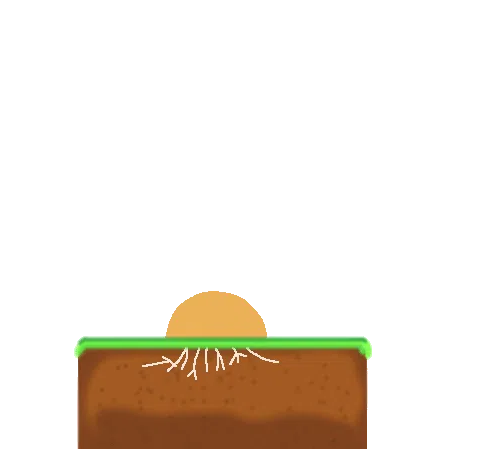

Ласкаво просимо до лісів Вінниччини!
Цей інтерактивний довідник допоможе вам зануритися у різноманітне царство грибів нашого регіону. Тут зібрані детальні ілюстрації та описи найпоширеніших видів: від трубчастих та пластинчастих грибів до вкрай небезпечних отруйних екземплярів, які варто оминати. Вивчайте характерні ознаки та особливості кожного виду, щоб ваші лісові прогулянки були цікавими та безпечними.
